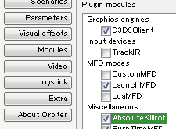

その他のMOD
当サイトに解説記事のあるMODの一覧です。
Orbiter2010 or 2016のどちらかでしか使えないものは、MOD名の右端にバージョンを書いてあります。
何も書いていない場合は、2010・2016の両方で使えるということです。
グラフィック強化MOD
ゲームのグラフィックを改善するMODです。
| D3D9Client | DirectX9を使って描画できるようにする。 |
| Orbiter2010のグラフィックMOD(2010) | 惑星・滑走路などのMODのまとめ。 |
軌道計算・機能追加MOD
| Burn time calculator | 自動噴射とDelta Vの計算ができる。 |
| Launch MFD | 打ち上げ方位の計算と自動打ち上げに使える。 |
| LunarTransferMFD | 地球―月において軌道計算・マニューバの作成ができる。軌道予測の精度が高いが、ほかの惑星では使えない。 |
| AeroBrake MFD | 再突入・滑空の予測進路を表示する。正確に目標地点に降下できる。 |
| Scenario Editor TLE | TLEデータを使って人工衛星などの軌道を再現できる。 |
| WarpDrive MFD | ワープ航行を可能にする。 |
| CamShake | コクピットの振動を再現する。 |
| PursuitMFD | 姿勢制御、ドッキング、着陸を自動化・補助する。 |
| Camera MFD(2016) | MFDに外部の映像を表示する。 D3D9Clientが必要。 |
機体追加MOD
宇宙船やロケットなどを追加するMODです。
Spacecraft3 / Multistage2 / Stage.dll
機体追加MODの導入で必要になるモジュール。
実在するもの
| Soyuz FG/U v1.2(2010) | ソユーズロケットを再現している。オートパイロットで打ち上げが可能。 |
| H-IIB HTV | 日本のISS補給機「こうのとり」とH2Bロケットが同梱されている。 |
| HARP | 実在した大砲による打ち上げ計画を再現したもの。 |
| R-9(2010) | ソ連のR-9 ICBMを再現しており、核攻撃における弾道飛行を再現できる。 |
| Voyager - The 32nd Anniversary Edition(2010) | ボイジャー探査機によるグランド・ツアーに挑戦できる。 |
| Vostok | ボストーク宇宙船によるガガーリンの初飛行を追体験できる。 |
架空のもの
| XR2 Ravenstar(2016) | スクラムジェットを搭載した架空機。リアリズムと操作性のバランスがよい。 |
| Arrow Freighter(2010) | 車両・人員・貨物を載せての長距離航行が可能な星間貨物船。 |
| Space Elevator | 軌道エレベータを再現しており、実際に地上から静止軌道までペイロードを持ち上げられる。 |
単独記事のないもの
Kill Rotオートパイロットで機体の回転が完全に止まるようになる。
これを導入すると、高倍率のタイムワープを使っても機体がほとんど回転しない。
ダウンロードしたファイルを解凍して、中身をOrbiterのフォルダに上書き。
ModulesタブでAbsoluteKillrotにチェックを入れる。
